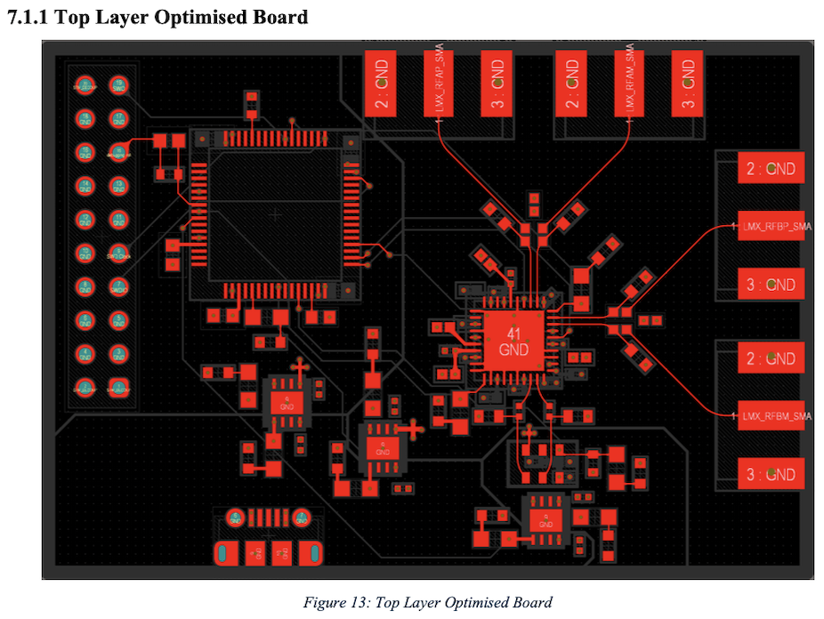
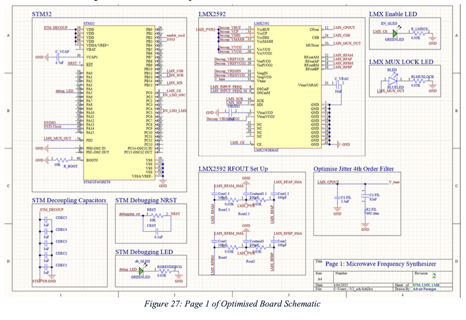
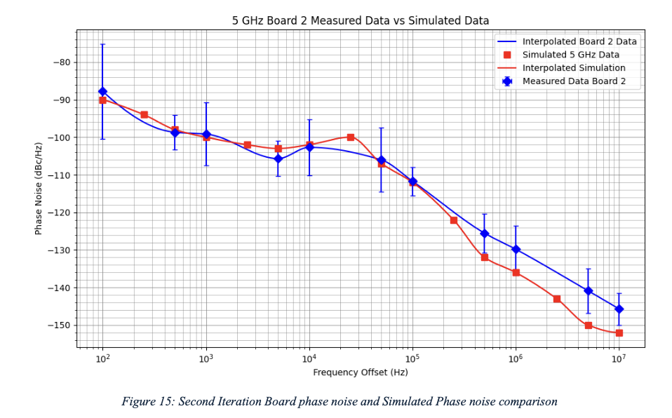
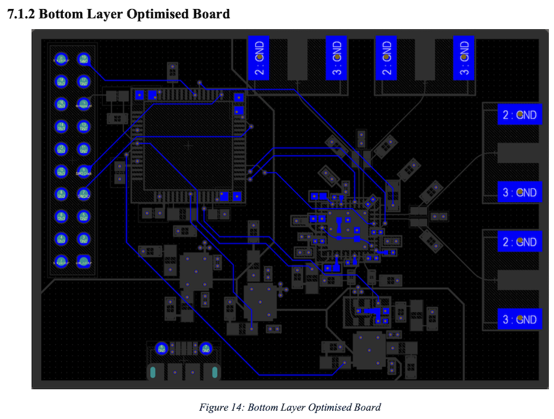
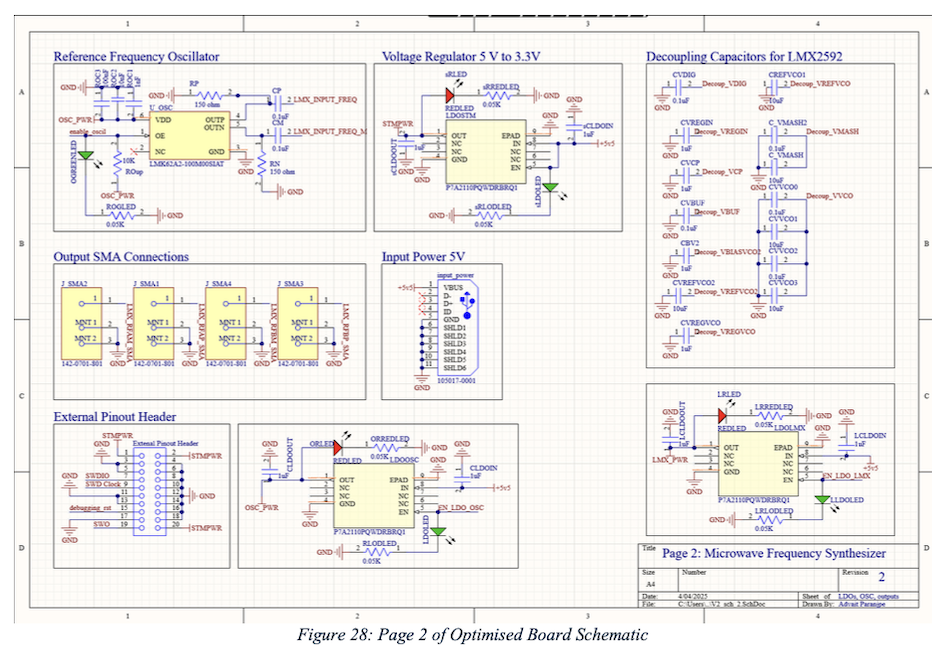
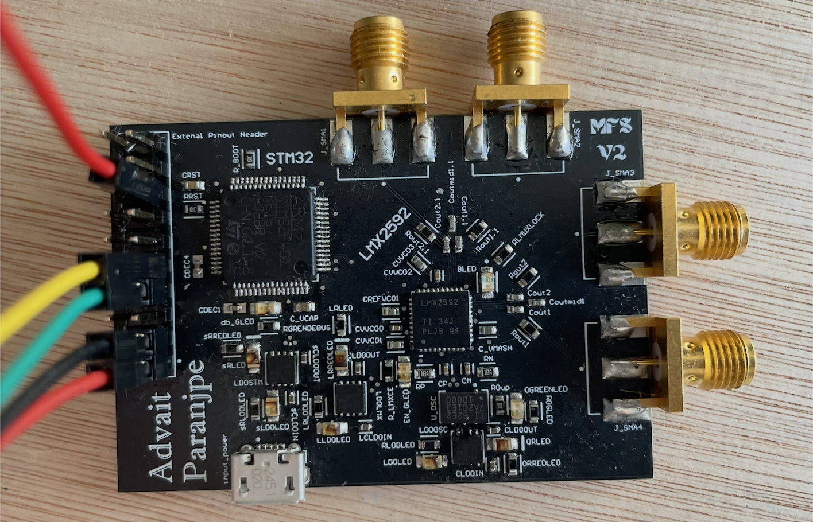

Portfolio
Selected engineering work, built end-to-end.
Projects
PixelForgeFPGA Retro Graphics Engine (Basys3 / Artix-7)
PixelForgeFPGA Retro Graphics Engine (Basys3 / Artix-7)
PixelForge is a retro-style graphics engine built in SystemVerilog for the Basys3 FPGA board. The project focused on taking a full graphics pipeline from idea to working hardware: generating a live VGA signal, rendering tiles and sprites in real time, and making sure the design was reliable enough to run on board rather than only in simulation. A major part of the work was building a pipelined pixel path, managing BRAM-based graphics data, and then verifying the design with a self-checking testbench and on-board ILA debug before bitstream generation.
SpeakUpReal-Time Sign Language to Speech Translator
SpeakUpReal-Time Sign Language to Speech Translator
SpeakUp is an embedded sign-language-to-speech system designed to run fully offline on a Raspberry Pi 3 with a Sony IMX500 camera. The project combined vision, on-device inference, and speech synthesis into one real-time pipeline, with the goal of making gesture recognition usable on constrained hardware rather than relying on cloud processing. The work involved fine-tuning and quantizing a MobileNetV2 model, integrating eSpeak text-to-speech, and then optimizing the full capture-to-neural-network-to-audio path with pipelining and thread pinning so the system stayed responsive in practice.
DissertationNovel Tunable Microwave Frequency Synthesizer (Cascaded PLL)
DissertationNovel Tunable Microwave Frequency Synthesizer (Cascaded PLL)
This dissertation project centered on designing a tunable microwave frequency synthesizer for 5G systems using a novel cascaded-PLL architecture. The work covered the full stack from RF design through firmware and user control: defining the synthesizer architecture, validating performance in the lab with a spectrum analyzer, creating a CRC-protected SPI interface with read-back verification, and building C/C++ firmware plus a Python GUI to make switching and calibration practical. A big part of the project was proving that the design was not only theoretically sound, but also robust on real hardware.
Media
Measurements, PCB, and tooling snapshots.






STMicroelectronicsAutonomous Line Tracking Buggy
STMicroelectronicsAutonomous Line Tracking Buggy
This project involved building an autonomous line-tracking buggy and tuning its control loop so it could follow the track reliably under real competition conditions. The main engineering challenge was designing and tuning a PID controller that stayed stable while handling sensor noise and track variation. The end result was a robust control system that translated directly into competition performance.
Experience
National Energy System OperatorBackend Software Engineering Intern
National Energy System OperatorBackend Software Engineering Intern
At the National Energy System Operator, the work centered on making large forecasting and simulation tools faster, more reliable, and more useful to the teams depending on them. The role involved refactoring critical code, building decision logic for price forecasting, and improving data movement into simulation pipelines. A strong theme throughout the internship was turning performance work into measurable engineering impact at real scale.
National Grid ESOData Engineering Intern
National Grid ESOData Engineering Intern
At National Grid ESO, the focus was on building cleaner and more automated data pipelines for electrical-grid datasets. The work combined API integration, data processing, and communication of large volumes of information in a way that was easier for stakeholders to use. The result was a set of improvements that reduced manual effort, improved parsing performance, and made large datasets easier to review.
BMWElectronics and Systems Technology Intern
BMWElectronics and Systems Technology Intern
At BMW, the work focused on supporting diagnostics workflows for the MGU22 infotainment platform. The role involved contributing to C++ tooling used in regenerative-braking diagnostics, with an emphasis on making engineering workflows more practical and reducing the time needed for testing and analysis.
About
I’m a UCLA M.S. ECE student who likes building real projects and getting them to work end-to-end. I care about clear design, careful debugging, and having something concrete to show: tests, measurements, demos, or benchmarks.